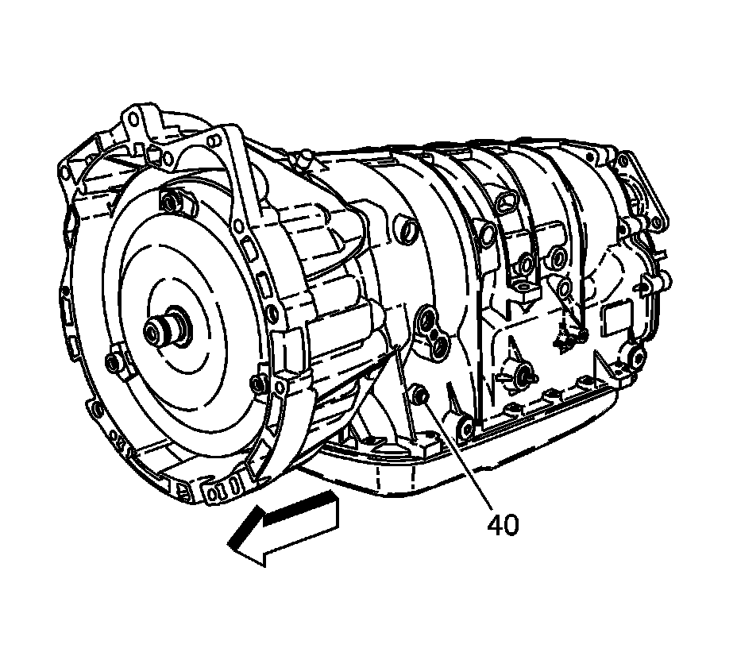

Line Pressure Check
Line Pressure Check
Tools Required
* J 21867 Pressure Gage
* J 21867-4 Pressure Gage Adapter
* J-21867-15 Braided Transmission Oil Pressure Test Hose
Important: Before performing a line pressure check, verify that the pressure control (PC) solenoid valve is receiving the correct electrical signal from the TCM.
1. Install a scan tool.
Caution: Keep the brakes applied at all times in order to prevent unexpected vehicle motion. Personal injury may result if the vehicle moves unexpectedly.
2. Start the engine and set the parking brake.
3. Inspect for a stored Diagnostic Trouble Code (DTC).
4. Repair the vehicle, if necessary.
5. Check the fluid level. Refer to the Transmission Fluid Check (Transmission Fluid Check) .
6. Check the manual linkage for proper adjustment.

Caution: Do not allow the line pressure gage hose to come into contact with the exhaust system. Transmission fluid is flammable, contact with the exhaust system may cause bodily injury or vehicle damage.
7. Turn the engine Off. Remove the transmission pressure test plug (40) and install J 21867-4 , J-21867-15 and J 21867 .
8. Put the gear selector in PARK range and set the parking brake.
9. Start the engine and allow the engine to warm up at idle.
Notice: The total test running time should not be longer than 2 minutes. Running the test longer than 2 minutes may damage the transaxle.
10. Access the PC solenoid valve control test on the scan tool.
11. Increase the PC solenoid actual current from 0 to 1 amps in 0.1 amp increments. Allow the pressure to stabilize for five seconds after each pressure change. Read the corresponding line pressure on the J 21867 .
12. Refer to the Line Pressure (Pressure, Vacuum and Temperature Specifications) specification table. Compare the data to the table.
13. If pressure readings differ greatly from the table, refer to Fluid Pressure High or Low (Fluid Pressure High or Low) .
14. Turn engine OFF. Remove the J 21867-4 , J-21867-15 and J 21867 .
15. Inspect the pressure test plug (40) and O-ring (66) for damage.
Notice: Refer to Fastener Notice (Fastener Notice) .
Important: If the pressure test plug (40) and O-ring (66) are not damaged, they should be reused.
16. Install the transmission pressure test plug (40).
Tighten the transmission pressure test plug to 11 N.m (8 lb ft).